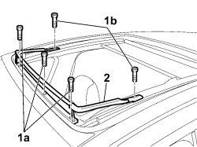

7030B42 SLIDING ROOF SPOILER - R+R
- Path
- Procedures > 70 FITTINGS > 7030 SUN ROOF/GLASS PANEL > 7030B SLIDING ROOF > 7030B42 SLIDING ROOF SPOILER - R+R
- Kind
- repair procedure (removal / refitting; the operation number is the code)
- Applies to
- all engines; all production periods
- Interactive page
- https://sloeber94.github.io/elrnDB-fCrm/en/#/194000981
Applies to: all engines; all production periods
 Removing
Removing
 Refitting
Refitting1. Undo the front bolts (1a) for the deflector blind lower attachment and the bolts (1b) from the deflector arms.
2. Remove the spoiler.

Applies to: all engines; all production periods
Refitting
Removing- Check that the spoiler is not damaged.
- Tighten the two bolts to the deflector arms.
- Position the spoiler and tighten the front bolts for the deflector blind lower mounting.
- Activate the spoiler manually at least three times.